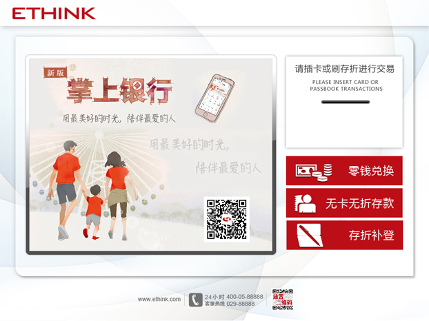

描述
界面中部内容区左侧为广告区，右侧为插卡等动画，通过动画减少用户对操作方式的不确定感。
示意图

行为状态
- 广告区：580*460px，广告可切换；
- 动画区：296x240px，色彩同界面色彩相同；
- 按钮区：1、尺寸278*70px；2、色值：请参看视觉元素规定；3、字体：微软雅黑；4、字色：#FFFFFF；5、字号：26px；6、图标为PNG图；
- 底部信息区：1、网址：字号14px，字体Arial，字色#666666；2、客服电话：图标为字符图标，字色#666666；数字字号14px，字体Arial，字色#666666；3、二维码55*55px；4、三块信息以浅灰色短竖线分隔#d0d0d0；
使用指南
- 动画形式不限，可为swf格式，也可为gif格式等动画；
- 底部信息区内容可根据实际展示；